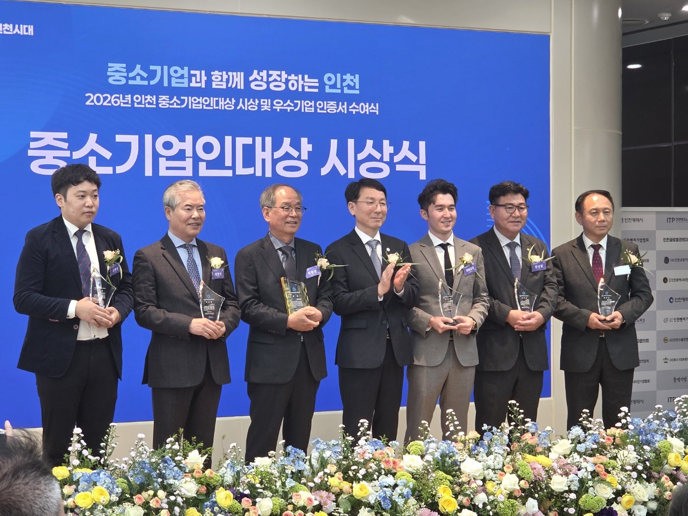
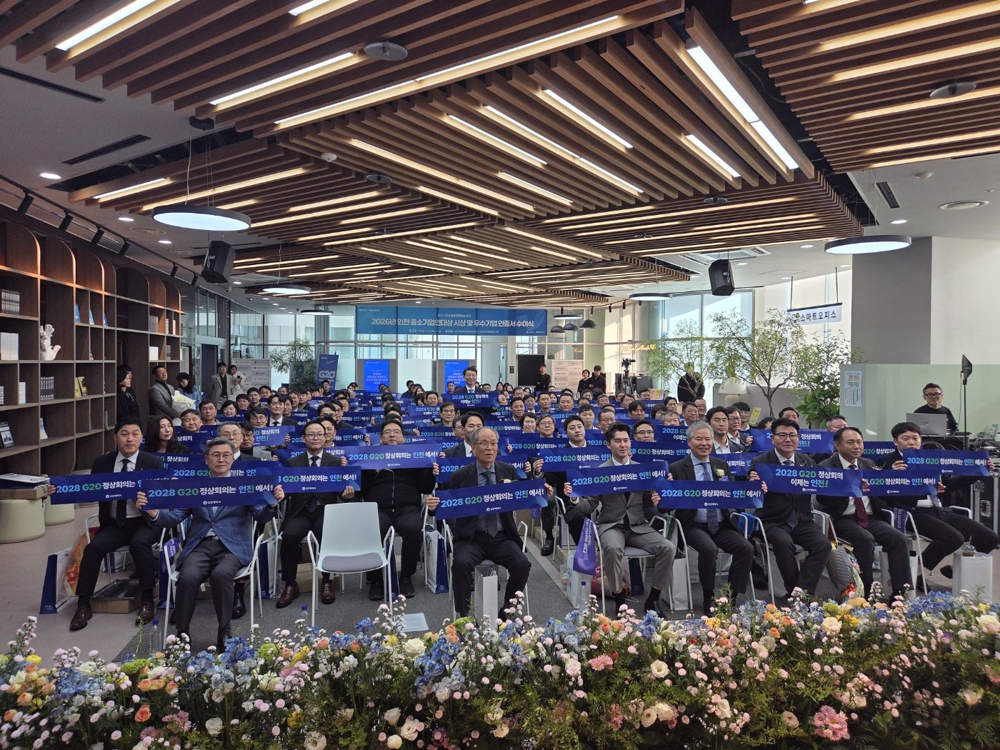

인천 중소기업인대상에 수성밸브공업 이광균 대표…우수기업 73곳 선정
유망 35곳·비전 29곳·중견성장사다리 9곳
경영안정자금 이자차액 우대, 지방세 세무조사 유예
AI경제저널=김갑봉 기자 | 인천시가 올해 중소기업인대상 수상자 6명과 우수기업 73곳을 뽑아 5일 시상했다. 시상식은 미추홀타워 인천기업경영지원센터에서 열렸다. 지역경제 발전과 기술 혁신을 이끈 기업인과 기업을 찾아 격려하는 자리다.

대상은 수성밸브공업 이광균 대표이사가 받았다. 수성밸브공업은 검단구에 있는 산업용 밸브 제조기업이다. 1999년 세워져 유체 역류를 막는 체크밸브 등을 만든다.
인천시는 수성밸브공업이 국제 인증과 특허로 품질 혁신을 이뤘다고 설명했다. 근로환경을 개선하고 지역사회 상생에 앞장선 공로도 높이 평가했다고 밝혔다.
우수상은 비엔세라 RAKHMATZODA DZHAKHONGIR 대표이사와 인목 석정기 대표이사가 받았다. 장려상은 위드퍼 한상담, 명성마그네트 정광채, 수빈조명 오훈성 대표이사에게 돌아갔다.
우수기업은 성장 단계로 나눠 뽑았다
우수기업은 유망중소기업 35곳, 비전기업 29곳, 중견성장사다리기업 9곳이다. 유망중소기업에는 케이피나인, 비전기업에는 이온폴리스, 중견성장사다리기업에는 이너트론 등이 들었다.
인천시는 1차 서류평가와 2차 현지실사를 거쳤다. 이어 심의위원회의 최종 평가로 수상자와 우수기업을 정했다. 중소기업인대상은 대상·우수상·장려상으로 나눴다.
선정 기업과 수상 기업인은 중소기업 경영안정자금의 이자차액보전을 우대받는다. 시 기업지원사업에서 가점을 받고, 지방세 세무조사도 유예된다.
혜택의 무게는 이자에 있다
혜택 가운데 기업의 현금 흐름에 바로 닿는 것은 이자 지원이다. 한국은행에 따르면 9월 예금은행 신규 대출금리는 연 4.57%로 한 달 새 0.17%포인트 올랐다.
이자보상비율은 영업이익을 이자비용으로 나눈 값이다. 한국은행의 2025년 기업경영분석에서 이 비율이 100% 미만인 기업은 42.9%였다. 열 곳 가운데 네 곳 넘게 영업으로 이자를 다 갚지 못했다.
인천 제조 현장의 일자리는 늘고 있다. 경인지방데이터청에 따르면 인천 9월 제조업 취업자는 1만1000명(3.5%) 늘었다. 다만 국가데이터처의 2025년 기업생멸행정통계에서 새로 문을 연 기업의 1년 생존율은 63.9%였다.
금리가 높을수록 이자 보전의 값은 커진다. 1억 원을 빌린 기업이 1%포인트를 보전받으면 한 해 이자 100만 원을 덜 낸다. 우수기업 선정이 기술 인증을 넘어 자금 비용의 문제로 이어지는 까닭이다.

김상길 인천시 미래산업본부장은 고금리와 대외 불확실성을 어려운 여건으로 꼽았다. 그는 "끊임없는 기술 혁신과 경영 개선으로 지역 경제를 버팀목처럼 지탱해 준 기업인 여러분께 감사드린다"고 말했다.
참고문헌
- 한국은행(2026). 2025년 연간 기업경영분석 결과(보도자료). 2026년 10월 21일. https://eiec.kdi.re.kr/policy/materialView.do?num=288345
- 한국은행(2026). 2026년 9월 금융기관 가중평균금리(보도자료). 2026년 10월 29일. https://www.bok.or.kr/portal/main/main.do
- 국가데이터처(2026). 2025년 기업생멸행정통계(잠정) 결과(보도자료). 2026년 10월 22일. https://eiec.kdi.re.kr/policy/materialView.do?num=288411
- 경인지방데이터청(2026). 2026년 9월 인천광역시 고용동향. 2026년 10월 16일. 인천시 일자리플랫폼 게시. https://www.incheon.go.kr/jobs/main/pst/list.do?pst_id=m_job_trend
- 인천광역시 미래산업정책과(2026). 인천시, 지역경제 성장 이끈 기업인 6명·우수기업 73개사 선정 시상(보도자료). 2026년 11월 5일. https://www.incheon.go.kr/IC010205/view?repSeq=DOM_0000000015911388
[사진 출처]
- [사진1·2] 인천광역시 보도자료 「인천시, 지역경제 성장 이끈 기업인 6명·우수기업 73개사 선정 시상」 붙임 현장사진3·현장사진2, 공공누리 출처표시, 2026.11.5., https://www.incheon.go.kr/IC010205/view?repSeq=DOM_0000000015911388
관련기사
- 인천시 "국비 1306억 더"…노동감독관 인건비·인천e음·M버스
- 강화남단 경제자유구역, 지정 요청 11개월째…2차 발전계획에 담는다
- 청라 영상단지 준공 2031년으로 4년 늦춰…IFEZ, 콘텐츠·바이오로 판 짠다
- 검단 근로자복합문화센터 문 열어…월 1만원 강좌, 평일 밤 9시까지
저작권자 © AI경제저널 무단전재 및 재배포, AI학습 및 활용 금지